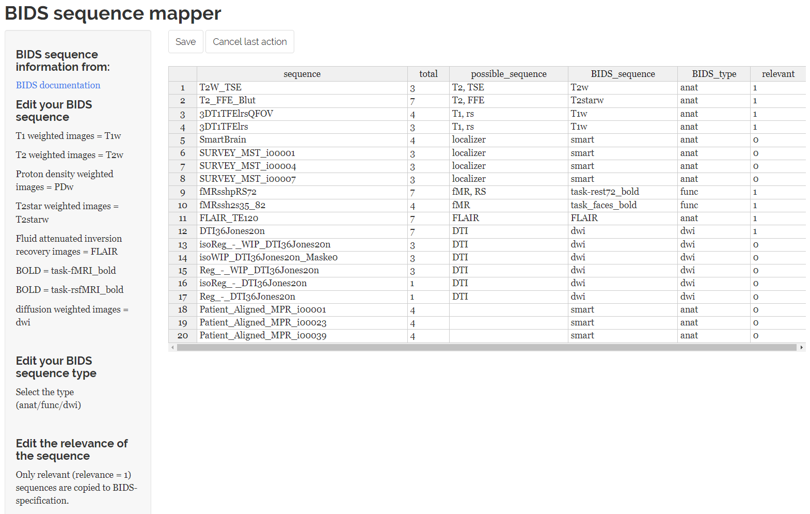
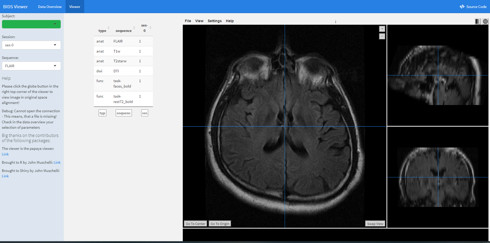

Start of the workflow
Your data is converted into NifTI format using dcm2niix based on the inputs.
Each JSON header is read out and combined into one file.
The sequence mapper GUI
After extracting the distinct sequence-IDs, the Sequence Mapper, a Shiny application is started.
You should be able to rename your sequences in accordance with the BIDS specification.
A double-click on a cell will open it for editing.
The Sequence Mapper should now begin displaying the interface as follows:

You have to edit each entry according to the BIDS specification. Some tips can be found on the left panel and hyperlinks to the BIDS specification. Then you click “save” and close the ‘sequence mapper’.
You must edit every cell with the phrase “please edit.”
Using regular expressions based on BIDS, each ‘BIDS_sequence’ and ‘BIDS_type’ entry is validated in the backend. There is a good possibility that a row will provide a valid BIDS output if it is coloured “green.”
Note that you are not restricted in how you name files by us. If you mark a non-valid BIDS string as relevant, it will be copied to BIDS and you can save it.
Red rows with “irrelevant” flagged cells can be disregarded. There is no export of these to BIDS. However, you need to take the “please edit” out of them. This is required in order for the algorithm to recognize that the user has changed each cell.
After clicking “save”, please exit the app. The workflow continues after the closing.

When a sequence is recognised as BIDS compatible, it is indicated in the “matched” column. Investigate each letter of the filename if your sequence appears in the “unmatched” column.
BIDS dataset & validation
Note
Only the metadata contained within the BIDS folder is free of potentially identifiable information. Follow the legal terms when sharing your dataset and consider additional defacing, pseudonymization, or both.
When everything is in order:
The files are copied to BIDS.
The BIDS validation process begins. If Docker is already installed on your machine, it is started automatically. If not, the online-version is launched, and you must choose your folder manually. Please note: Files are never uploaded to the BIDS-Validator.
You are prompted, if you want to remove temporary images from your hard disk. Avoid performing this by hand! Only do this after validating your data and gathering all of your data.
A Shiny viewer is launched to examine the images visually.
